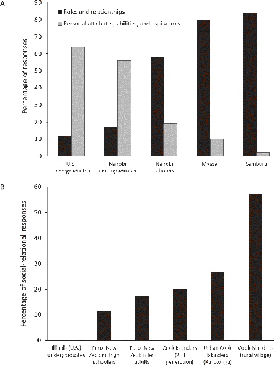
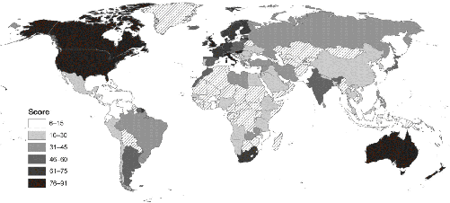
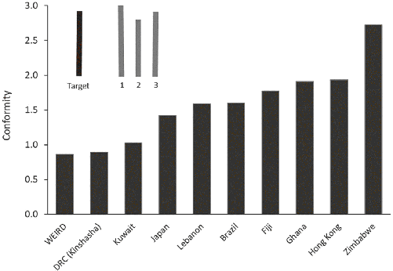
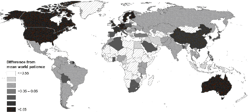
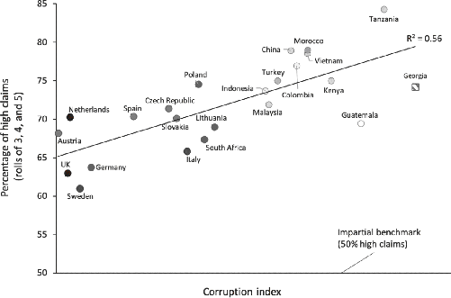
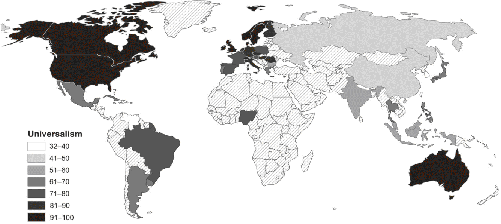
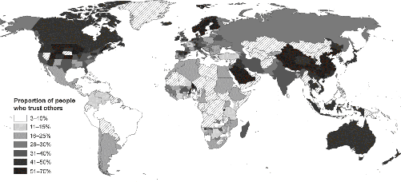
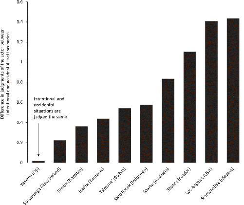
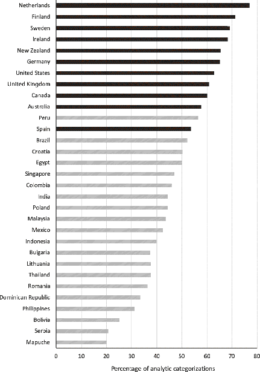

The Western conception of the person as a bounded, unique, more or less integrated motivational and cognitive universe; a dynamic center of awareness, emotion, judgment, and action organized into a distinctive whole and set contrastively both against other such wholes and against a social and natural background is, however incorrigible it may seem to us, a rather peculiar idea within the context of the world’s cultures.
—anthropologist Clifford Geertz (1974, p. 31)
Who are you?
Perhaps you are WEIRD, raised in a society that is Western, Educated, Industrialized, Rich, and Democratic. If so, you’re likely rather psychologically peculiar. Unlike much of the world today, and most people who have ever lived, we WEIRD people are highly individualistic, self-obsessed, control-oriented, nonconformist, and analytical. We focus on ourselves—our attributes, accomplishments, and aspirations—over our relationships and social roles. We aim to be “ourselves” across contexts and see inconsistencies in others as hypocrisy rather than flexibility. Like everyone else, we are inclined to go along with our peers and authority figures; but, we are less willing to conform to others when this conflicts with our own beliefs, observations, and preferences. We see ourselves as unique beings, not as nodes in a social network that stretches out through space and back in time. When acting, we prefer a sense of control and the feeling of making our own choices.
When reasoning, WEIRD people tend to look for universal categories and rules with which to organize the world, and mentally project straight lines to understand patterns and anticipate trends. We simplify complex phenomena by breaking them down into discrete constituents and assigning properties or abstract categories to these components—whether by imagining types of particles, pathogens, or personalities. We often miss the relationships between the parts or the similarities between phenomena that don’t fit nicely into our categories. That is, we know a lot about individual trees but often miss the forest.
WEIRD people are also particularly patient and often hardworking. Through potent self-regulation, we can defer gratification—in financial rewards, pleasure, and security—well into the future in exchange for discomfort and uncertainty in the present. In fact, WEIRD people sometimes take pleasure in hard work and find the experience purifying.
Paradoxically, and despite our strong individualism and self-obsession, WEIRD people tend to stick to impartial rules or principles and can be quite trusting, honest, fair, and cooperative toward strangers or anonymous others. In fact, relative to most populations, we WEIRD people show relatively less favoritism toward our friends, families, co-ethnics, and local communities than other populations do. We think nepotism is wrong, and fetishize abstract principles over context, practicality, relationships, and expediency.
Emotionally, WEIRD people are often racked by guilt as they fail to live up to their culturally inspired, but largely self-imposed, standards and aspirations. In most non-WEIRD societies, shame—not guilt—dominates people’s lives. People experience shame when they, their relatives, or even their friends fail to live up to the standards imposed on them by their communities. Non-WEIRD populations might, for example, “lose face” in front of the judging eyes of others when their daughter elopes with someone outside their social network. Meanwhile, WEIRD people might feel guilty for taking a nap instead of hitting the gym even though this isn’t an obligation and no one will know. Guilt depends on one’s own standards and self-evaluation, while shame depends on societal standards and public judgment.
These are just a few examples, the tip of that psychological iceberg I mentioned, which includes aspects of perception, memory, attention, reasoning, motivation, decision-making, and moral judgment. But, the questions I hope to answer in this book are: How did WEIRD populations become so psychologically peculiar? Why are they different?
Tracking this puzzle back into Late Antiquity, we’ll see that one sect of Christianity drove the spread of a particular package of social norms and beliefs that dramatically altered marriage, families, inheritance, and ownership in parts of Europe over centuries. This grassroots transformation of family life initiated a set of psychological changes that spurred new forms of urbanization and fueled impersonal commerce while driving the proliferation of voluntary organizations, from merchant guilds and charter towns to universities and transregional monastic orders, that were governed by new and increasingly individualistic norms and laws. You’ll see how, in the process of explaining WEIRD psychology, we’ll also illuminate the exotic nature of WEIRD religion, marriage, and family. If you didn’t know that our religions, marriages, and families were so strange, buckle up.
Understanding how and why some European populations became psychologically peculiar by the Late Middle Ages illuminates another great puzzle: the “rise of the West.” Why did western European societies conquer so much of the world after about 1500? Why did economic growth, powered by new technologies and the Industrial Revolution, erupt from this same region in the late 18th century, creating the waves of globalization that are still crashing over the world today?
If a team of alien anthropologists had surveyed humanity from orbit in 1000 CE, or even 1200 CE, they would never have guessed that European populations would dominate the globe during the second half of the millennium. Instead, they probably would have bet on China or the Islamic world.1
What these aliens would have missed from their orbital perch was the quiet fermentation of a new psychology during the Middle Ages in some European communities. This evolving proto-WEIRD psychology gradually laid the groundwork for the rise of impersonal markets, urbanization, constitutional governments, democratic politics, individualistic religions, scientific societies, and relentless innovation. In short, these psychological shifts fertilized the soil for the seeds of the modern world. Thus, to understand the roots of contemporary societies we need to explore how our psychology culturally adapts and coevolves with our most basic social institution—the family.
Let’s begin by taking a closer look at the iceberg.
Try completing this sentence in 10 different ways:
I am _______________.
…
If you are WEIRD, you probably answered with words like “curious” or “passionate” and phrases like “a scientist,” “a surgeon,” or “a kayaker.” You were probably less inclined to respond with things like “Josh’s dad” or “Maya’s mom,” even though those are equally true and potentially more central to your life. This focus on personal attributes, achievements, and membership in abstract or idealized social groups over personal relationships, inherited social roles, and face-to-face communities is a robust feature of WEIRD psychology, but one that makes us rather peculiar from a global perspective.
Figure 1.1 shows how people in Africa and the South Pacific respond to the “Who am I?” (Figure 1.1A) and the “I am_______” tasks (Figure 1.1B), respectively. The data available for Figure 1.1A permitted me to calculate both the percentage of responses that were specifically individualistic, referring to personal attributes, aspirations, and achievements, and those that were about social roles and relationships. At one end of the spectrum, American undergraduates focus almost exclusively on their individual attributes, aspirations, and achievements. At the other end are the Maasai and Samburu. In rural Kenya, these two tribal groups organize themselves in patrilineal clans and maintain a traditional cattle-herding lifestyle. Their responses referenced their roles and relationships at least 80 percent of the time while only occasionally highlighting their personal attributes or achievements (10 percent or less of the time). In the middle of this distribution are two populations from Nairobi, the bustling capital of Kenya. Nairobi laborers, including participants from several different tribal groups, responded mostly by referencing their roles and relationships, though they did this less than the Maasai or Samburu. Meanwhile, the fully urbanized undergraduates at the University of Nairobi (a European-style institution) look much more like their American counterparts, with most of their responses referencing their personal attributes or individual achievements.3

On the other side of the globe, Figure 1.1B tells a similar story. The close political and social ties between New Zealand and the Cook Islands allow us to compare populations of Cook Islanders who have experienced differing degrees of contact with WEIRD New Zealanders. Unlike in Kenya, the data here only permitted me to separate out the social roles and relationship responses from everything else. Starting in a rural village on one of the outer islands, where people still live in traditional hereditary lineages, the average percentage of social-relational responses was nearly 60 percent. Moving to Rarotonga, the national capital and a popular tourist destination, the frequency of social-relational responses drops to 27 percent. In New Zealand, among the children of immigrants, the frequency of such responses falls further, to 20 percent. This stands close to the average for European-descent New Zealanders, who come in at 17 percent. New Zealand high school students are lower yet, at 12 percent. By comparison, American undergraduates are typically at or below this percentage, with some studies showing zero social-relational responses.
Complementing this work, many similar psychological studies allow us to compare Americans, Canadians, Brits, Australians, and Swedes to various Asian populations, including Japanese, Malaysians, Chinese, and Koreans. The upshot is that WEIRD people usually lie at the extreme end of the distribution, focusing intensely on their personal attributes, achievements, aspirations, and personalities over their roles, responsibilities, and relationships. American undergraduates, in particular, seem unusually self-absorbed, even among other WEIRD populations.4
Focusing on one’s attributes and achievements over one’s roles and relationships is a key element in a psychological package that I’ll clump together as the individualism complex or just individualism. Individualism is best thought of as a psychological cluster that allows people to better navigate WEIRD social worlds by calibrating their perceptions, attention, judgments, and emotions. I expect most populations to reveal psychological packages that similarly “fit” with their societies’ institutions, technologies, environments, and languages, though as you’ll see the WEIRD package is particularly peculiar.
To understand individualism, let’s start at the other end of the spectrum.5 Throughout most of human history, people grew up enmeshed in dense family networks that knitted together distant cousins and in-laws. In these regulated-relational worlds, people’s survival, identity, security, marriages, and success depended on the health and prosperity of kin-based networks, which often formed discrete institutions known as clans, lineages, houses, or tribes. This is the world of the Maasai, Samburu, and Cook Islanders. Within these enduring networks, everyone is endowed with an extensive array of inherited obligations, responsibilities, and privileges in relation to others in a dense social web. For example, a man could be obligated to avenge the murder of one type of second cousin (through his paternal great-grandfather), privileged to marry his mother’s brother’s daughters but tabooed from marrying strangers, and responsible for performing expensive rituals to honor his ancestors, who will shower bad luck on his entire lineage if he’s negligent. Behavior is highly constrained by context and the types of relationships involved. The social norms that govern these relationships, which collectively form what I’ll call kin-based institutions, constrain people from shopping widely for new friends, business partners, or spouses. Instead, they channel people’s investments into a distinct and largely inherited in-group. Many kin-based institutions not only influence inheritance and the residence of newly married couples, they also create communal ownership of property (e.g., land is owned by the clan) and shared liability for criminal acts among members (e.g., fathers can be imprisoned for their sons’ crimes).
This social interdependence breeds emotional interdependence, leading people to strongly identify with their in-groups and to make sharp ingroup vs. out-group distinctions based on social interconnections. In fact, in this world, though you may not know some of your distant cousins or fellow tribal members who are three or four relationship links removed, they will remain in-group members as long as they are connected to you through family ties. By contrast, otherwise familiar faces may remain, effectively, strangers if you cannot link to them through your dense, durable social ties.6
Success and respect in this world hinge on adroitly navigating these kin-based institutions. This often means (1) conforming to fellow in-group members, (2) deferring to authorities like elders or sages, (3) policing the behavior of those close to you (but not strangers), (4) sharply distinguishing your in-group from everyone else, and (5) promoting your network’s collective success whenever possible. Further, because of the numerous obligations, responsibilities, and constraints imposed by custom, people’s motivations tend not to be “approach-oriented,” aimed at starting new relationships or meeting strangers. Instead, people become “avoidance-oriented” to minimize their chances of appearing deviant, fomenting disharmony, or bringing shame on themselves or others.7
That’s one extreme; now, contrast that with the other—individualistic—end of the spectrum. Imagine the psychology needed to navigate a world with few inherited ties in which success and respect depend on (1) honing one’s own special attributes; (2) attracting friends, mates, and business partners with these attributes; and then (3) sustaining relationships with them that will endure for as long as the relationship remains mutually beneficial. In this world, everyone is shopping for better relationships, which may or may not endure. People have few permanent ties and many ephemeral friends, colleagues, and acquaintances. In adapting psychologically to this world, people come to see themselves and others as independent agents defined by a unique or special set of talents (e.g., writer), interests (e.g., quilting), aspirations (e.g., making law partner), virtues (e.g., fairness), and principles (e.g., “no one is above the law”). These can be enhanced or accentuated if a person joins a like-minded group. One’s reputation with others, and with themselves (self-esteem), is shaped primarily by their own individual attributes and accomplishments, not by nourishing an enduring web of inherited ties that are governed by a complex set of relationship-specific social norms.8

For our first peek at global psychological variation, let’s squash the individualism complex down into a single dimension. Figure 1.2 maps a well-known omnibus measure of individualism developed by the Dutch psychologist Geert Hofstede based initially on surveys with IBM employees from around the world. The scale asks about people’s orientation toward themselves, their families, personal achievements, and individual goals. For example, one question asks, “How important is it to you to fully use your skills and abilities on the job?” and another, “How important is it to you to have challenging work to do—work from which you can get a personal sense of accomplishment?” More individualistically oriented people want to fully harness their skills and then draw a sense of accomplishment from their work. This scale’s strength is not that it zeroes in on one thin slice of psychology but rather that it aggregates several elements in the individualism package. At the high end of the scale, you won’t be shocked to find Americans (score 91), Australians (90), and Brits (89)—no doubt these are some of the WEIRDest people in the world. Beneath these chart-toppers, the most individualistic societies in the world are almost all in Europe, particularly in the north and west, or in British-descent societies like Canada (score 80) and New Zealand (79). Notably, Figure 1.2 also reveals our ignorance, as swaths of Africa and Central Asia remain largely terra incognita, psychologically speaking.10
This omnibus measure of individualism converges strikingly with evidence from other large global surveys. People from more individualistic countries, for example, possess weaker family ties and show less nepotism, meaning that company bosses, managers, and politicians are less likely to hire or promote relatives. Further, more individualistic countries are less inclined to distinguish in-groups from out-groups, more willing to help immigrants, and less firmly wedded to tradition and custom.
More individualistic countries are also richer, more innovative, and more economically productive. They possess more effective governments, which more capably furnish public services and infrastructure, like roads, schools, electricity, and water.11
Now, it’s commonly assumed that the strong positive relationships between psychological individualism and measures like national wealth and effective governments reflect a one-way causal process in which economic prosperity or liberal political institutions cause greater individualism. I certainly think that causality does indeed flow in this direction for some aspects of psychology, and probably dominates the economic and urbanization processes in much of the world today. We’ve seen how, for example, moving to urban areas likely affected the self-concepts of Cook Islanders and Nairobi laborers (Figure 1.1).12
However, could the causality also run the other way? If some other factor created more individualistic psychologies first, prior to economic growth and effective governments, could such a psychological shift stimulate urbanization, commercial markets, prosperity, innovation, and the creation of new forms of governance? To summarize, my answers are yes and yes. To see how this could happen, let’s first look at the broader psychological package that has become historically intertwined with the individualism complex. Once you see the key psychological components, it should be clearer how these changes could have had such big effects on Europe’s economic, religious, and political history.
Before continuing our global tour of psychological variation, let me highlight four important points to keep in mind:13
Adapting to an individualistic social world means honing personal attributes that persist across diverse contexts and relationships. By contrast, prospering in a regulated-relational world means navigating very different kinds of relationships that demand quite different approaches and behaviors. Psychological evidence from diverse societies, including populations in the United States, Australia, Mexico, Malaysia, Korea, and Japan, reveals these patterns. Compared to much of the world, WEIRD people report behaving in more consistent ways—in terms of traits like “honesty” or “coldness”—across different types of relationships, such as with younger peers, friends, parents, professors, and strangers. By contrast, Koreans and Japanese report consistency only within relational contexts—that is, in how they behave separately toward their mothers, friends, or professors across time. Across relational contexts, they vary widely and comfortably: one might be reserved and self-deprecating with professors while being joking and playful with friends. The result is that while Americans sometimes see behavioral flexibility as “two-faced” or “hypocritical,” many other populations see personal adjustments to differing relationships as reflecting wisdom, maturity, and social adeptness.14
Across societies, these differing expectations and normative standards incentivize and mold distinct psychological responses. For example, in a study comparing Koreans and Americans, both parents and friends were asked to make judgments about the characteristics of the study participants. Among Americans, participants who had reported greater behavioral consistency across contexts were rated as both more “socially skilled” and more “likable” by parents and friends than those who reported less consistency. That is, among WEIRD people, you are supposed to be consistent across relationships, and you will do better socially if you are. Meanwhile, in Korea, there was no relationship between the consistency measure across relationships and either social skills or likability—so, being consistent doesn’t buy you anything socially. Back in the United States, the degree of agreement between parents and friends on the characteristics of the target participants was twice that found in Korea. This means that “the person” “seen” by American friends looked more similar to that seen by American parents than in Korea, where friends and parents experience the same individuals as more different. Finally, the correlation between personal consistency across relationships and measures of both life satisfaction and positive emotions was much stronger among Americans than among Koreans. Overall, being consistent across relationships—“being yourself”—pays off more in America, both socially and emotionally.15
Such evidence suggests that the immense importance assigned by the discipline of psychology to notions of self-esteem and positive self-views is probably a WEIRD phenomenon. In contrast, in the few non-WEIRD societies where it has been studied, having high self-esteem and a positive view of oneself are not strongly linked to either life satisfaction or subjective well-being. In many societies, it’s other-esteem (“face”) that matters, not self-esteem rooted in the successful cultivation of a set of unique personal attributes that capture one’s “true self.”16
In WEIRD societies, the pressure to cultivate traits that are consistent across contexts and relationships leads to dispositionalism—a tendency to see people’s behavior as anchored in personal traits that influence their actions across many contexts. For example, the fact that “he’s lazy” (a disposition) explains why he’s not getting his work done. Alternatively, maybe he’s sick or injured? Dispositionalism emerges psychologically in two important ways. First, it makes us uncomfortable with our own inconsistencies. If you’ve had a course in Social Psychology, you might recognize this as Cognitive Dissonance. The available evidence suggests that WEIRD people suffer more severely from Cognitive Dissonance and do a range of mental gymnastics to relieve their discomfort. Second, dispositional thinking also influences how we judge others. Psychologists label this phenomenon the Fundamental Attribution Error, though it’s clearly not that fundamental; it’s WEIRD. In general, WEIRD people are particularly biased to attribute actions or behavioral patterns to what’s “inside” others, relying on inferences about dispositional traits (e.g., he’s “lazy” or “untrustworthy”), personalities (she’s “introverted” or “conscientious”), and underlying beliefs or intentions (“what did he know and when did he know it?”). Other populations focus more on actions and outcomes over what’s “inside.”17
Based on data from 2,921 university students in 37 countries, people from more individualistic societies report more guilt-like and fewer shame-like emotional experiences. In fact, students from countries like the United States, Australia, and the Netherlands hardly ever experience shame. Yet they had more guilt-like experiences than people in other societies; these experiences were more moralized and had a greater impact on both their self-esteem and personal relationships. Overall, the emotional lives of WEIRD people are particularly guilt-ridden.18
To understand this, we first need to consider shame and guilt more deeply. Shame is rooted in a genetically evolved psychological package that is associated with social devaluation in the eyes of others. Individuals experience shame when they violate social norms (e.g., committing adultery), fail to reach local performance standards (e.g., flunking a psychology course), or when they find themselves at the low end of the dominance hierarchy. Shame has a distinct universal display that involves downcast gaze, slumped shoulders, and a general inclination to “look small” (crouching). This display signals to the community that these poor performers recognize their violation or deficiency and are asking for leniency. Emotionally, those experiencing shame want to shrink away and disappear from public view. The ashamed avoid contact with others and may leave their communities for a time. The public nature of the failure is crucial: if there’s no public knowledge, there’s no shame, although people may experience fear that their secret will get out. Finally, shame can be experienced vicariously. In regulated-relational societies, a crime or illicit affair by one person can bring shame to his or her parents, siblings, and beyond, extending out to cousins and other distant relations. The reverberation of shame through kin networks makes sense because they are also judged and potentially punished for their relative’s actions.19
Guilt is different; it’s an internal guidance system and at least partially a product of culture, though it probably integrates some innate psychological components like regret. The feeling of guilt emerges when one measures their own actions and feelings against a purely personal standard. I can feel guilty for eating a giant pizza alone in my house or for not having given my change to the homeless guy that I encountered early Sunday morning on an empty Manhattan street. I feel this because I’ve fallen below my own personal standard, not because I’ve violated a widely shared norm or damaged my reputation with others.
Of course, in many cases we might experience both shame and guilt because we publicly violated a social norm—e.g., smacking a misbehaving son. Here, the shame comes from believing that others will now think less of us (I am the kind of person who hits children) and the guilt from our own internalized standards (e.g., don’t hit children, even in anger). Unlike shame, guilt has no universal displays, can last weeks or even years, and seems to require self-reflection. In contrast to the spontaneous social “withdrawal” and “avoidance” of shame, guilt often motivates “approach” and a desire to mitigate whatever is causing the guilt. Guilty feelings from letting a friend or spouse down, for example, can motivate efforts to apologize and repair the relationship.20
It’s easy to see why shame dominates many regulated-relational societies. First, there are many more closely monitored social norms that vary across contexts and relationships, and consequently more chances to screw up and commit shame-inducing errors, which are more likely to be spotted by members of people’s dense social networks. Second, relative to individualistic societies, people in regulated-relational societies are expected to fulfill multiple roles over their lives and develop a wide set of skills to at least some minimum threshold. This creates more opportunities to fall below local standards in the eyes of others. Third, social interdependence means that people can experience shame even if they themselves never do anything shameful. Of course, guilt probably also exists in many societies dominated by shame; it’s just less prominent and less important for making these societies function.21
By contrast, guilt rises to prominence in individualistic societies. As individuals cultivate their own unique attributes and talents, guilt is part of the affective machinery that motivates them to stick to their personal standards. Vegetarians, for example, might feel guilty for eating bacon even when they are traveling in distant cities, surrounded by nonvegetarians. No one is judging them for enjoying the bacon, but they still feel bad about it. The idea here is that, in individualistic societies, those who don’t feel much guilt will struggle to cultivate dispositional attributes, live up to their personal standards, and maintain high-quality personal relationships. Relative to guilt, shame is muted, because the social norms governing diverse relationships and contexts in individualistic societies are fewer, and often not closely monitored in these diffuse populations.22
Psychologists have been fascinated for over half a century by people’s willingness to conform to peers and obey authority figures.23 In Solomon Asch’s famous experiment, each participant entered the laboratory along with several other people, who appeared to be fellow participants. These “fellow participants,” however, were actually confederates who were working for the researchers. In each round, a target line segment was shown to the group alongside a set of three other segments, labeled 1, 2, and 3 (see the inset in Figure 1.3). Answering aloud, each person had to judge which of the three line segments matched the length of the target segment. On certain preset rounds, the confederates all gave the same incorrect response before the real participant answered. The judgment itself was easy: participants got the correct answer 98 percent of the time when they were alone. So, the question was: How inclined were people to override their own perceptual judgments to give an answer that matched that of others?
The answer depends on where you grew up. WEIRD people do conform to others, and this is what surprised Solomon. Only about one-quarter of his participants were never influenced by their peers. WEIRD people, however, conform less than all the other populations that have been studied. The bars in Figure 1.3 illustrate the size of the conformity effect across samples of undergraduates from 10 different countries. The power of conformity goes up by a factor of three as we move from WEIRD societies, at one end, to Zimbabwe, at the other end.25

Further analyses of these experiments reveal two interesting patterns. First, less individualistic societies are more inclined to conform to the group (correlating the data in Figures 1.2 and 1.3). Second, over the half century since Solomon’s initial efforts, conformity motivations among Americans have declined. That is, Americans are even less conforming now than in the early 1950s. Neither of these facts is particularly shocking, but it’s nice to know that the psychological evidence backs up our intuitions.26
The willingness of WEIRD people to ignore others’ opinions, preferences, views, and requests extends well beyond peers to include elders, grandfathers, and traditional authorities. Complementing these controlled studies of conformity, I’ll discuss global survey data in later chapters showing that, relative to other populations, WEIRD people don’t value conformity or see “obedience” as a virtue that needs to be instilled in children. They also don’t venerate either traditions or ancient sages as much as most other societies have, and elders simply don’t carry the same weight that they do in many other places.27
Suppose something happened historically that made people less conforming, less obedient, and less willing to defer to elders, traditional authorities, and ancient sages. Could such changes influence the cultural evolution of organizations, institutions, and innovation?
Here’s a series of choices. Do you prefer (A) $100 today or (B) $154 in one year? If you picked the $100 now, I’m going to sweeten the deal for next year and ask you whether you want (A) $100 today or (B) $185 in one year. But, if you initially said that you wanted to wait the year for the $154, I’ll make the delayed payment less appealing by asking you to pick between (A) $100 today or (B) $125 next year. If you now switch from the delayed payment (B) to $100 now (A), I will sweeten the delayed payment to $130. By titrating through these kinds of binary choices, researchers can triangulate in on a measure of people’s patience, or what is variously called “temporal discounting” or “delay discounting.” Impatient people “discount” the future more, meaning they weight immediate payoffs over delayed payoffs. More patient people, by contrast, are willing to wait longer to earn more money.
Patience varies dramatically across nations, among regions within nations, and between individuals. Using the titration method just described, along with a survey question, the economists Thomas Dohmen, Benjamin Enke, and their collaborators measured patience among 80,000 people in 76 countries. Figure 1.4 maps this variation at the country level, using darker shades to indicate countries in which people are—on average—more patient. While those in lightly shaded countries tend to go for the quick $100 today (calibrated to the local currency and purchasing power), those in the darkly shaded countries tend to wait the year for the bigger payoff. For example, people from the most patient country, Sweden, can resist the immediate $100 and are willing to wait a year for any amount of money over $144. In contrast, in Africa, Rwandans require at least $212 in a year before they are willing to pass up $100 today. On average, around the globe, people won’t defer gratification for a year until the delayed amount exceeds $189.

This map nicely highlights a continuous spread of global national-level variation in patience, including some variation within Europe. Starting with the most patient, the countries in black are: Sweden, the Netherlands, the United States, Canada, Switzerland, Australia, Germany, Austria, and Finland.29
Greater patience in these experiments is associated with better economic, educational, and governmental outcomes across countries, between regions within countries, and even among individuals within regions. At the national level, countries with more patient populations generate greater incomes (Gross Domestic Product, or GDP, per capita) and more innovation. These populations have higher savings rates, more formal schooling, and stronger cognitive skills in math, science, and reading. Institutionally, more patient countries have more stable democracies, clearer property rights, and more effective governments. The strong relationship between patience and these outcomes emerges even when we look at each world region separately. In fact, the data suggest that greater patience is most strongly linked to positive economic outcomes in less economically developed regions like sub-Saharan Africa, Southeast Asia, and the Middle East. That is, inclinations to defer gratification may be even more important for economic prosperity where the formal economic and political institutions operate less effectively.30
The same patterns emerge if we compare regions within countries or individuals within local regions. Within countries, regional populations possessing greater average patience generate higher incomes and attain more education. Similarly, comparing individuals within the same local area, more patient people get paid more and stay in school longer.
Delay-discounting measures are related to what psychologists call self-regulation or self-control. To measure self-control in children, researchers sit them in front of a single marshmallow and explain that if they wait until the experimenter returns to the room, they can have two marshmallows instead of just the one. The experimenter departs and then secretly watches to see how long it takes for the kid to cave and eat the marshmallow. Some kids eat the lone marshmallow right away. A few wait 15 or more minutes until the experimenter gives up and returns with the second marshmallow. The remainder of the children cave in somewhere in between. A child’s self-control is measured by the number of seconds they wait.31
Psychological tasks like these are often powerful predictors of real-life behavior. Adults and teenagers who were more patient in the marshmallow task as preschoolers stayed in school longer, got higher grades, saved more money, earned higher salaries, exercised more, and smoked less. They were also less likely to use drugs, abuse alcohol, and commit crimes. The effect of steely marshmallow patience on adult success holds independent of IQ and family socioeconomic status, and even if you only compare siblings within the same families—that is, a more patient child does better than her sibling when they are adults.32
As with individualism, guilt, and conformity, a person’s patience and self-control are calibrated to fit the institutional and technological environments that they confront across their lives. In some regulated-relational societies, there’s little personal payoff to self-control, so we shouldn’t expect the association between patience and adult success to be universal. Nevertheless, when local social norms reward self-control or penalize impatience, all manner of psychological tricks develop that ratchet up people’s self-control. As we go along, we’ll see how cultural learning, rituals, monogamous marriage, markets, and religious beliefs can contribute to increasing people’s patience and self-control in ways that lay the groundwork for new forms of government and more rapid economic growth.
Representing 149 countries, diplomats to the United Nations in New York City were immune from having to pay parking tickets until November 2002. With diplomatic immunity, they could park anywhere, double-park, and even block driveways, business entrances, and narrow Manhattan streets without having to pay fines. The effect of this immunity was big: between November 1997 and the end of 2002, UN diplomatic missions accumulated over 150,000 unpaid parking tickets totaling about $18 million in fines.
While bad for New Yorkers, this situation created a natural experiment for two economists, Ted Miguel and Ray Fisman. Because nearly 90 percent of UN missions are within one mile of the UN complex, most diplomats faced the same crowded streets, rainy days, and snowy weather. This allowed Ted and Ray to compare the accumulation of parking tickets for diplomats from different countries.
The differences were big. During the five years leading up to the end of immunity in 2002, diplomats from the UK, Sweden, Canada, Australia, and a few other countries got a total of zero tickets. Meanwhile, diplomats from Egypt, Chad, and Bulgaria, among other countries, got the most tickets, accumulating over 100 for each member of their respective diplomatic delegations. Looking across nations, the higher the international corruption index for a delegation’s home country, the more tickets those delegations accumulated. The relationship between corruption back home and parking behavior in Manhattan holds independent of the size of a country’s UN mission, the income of its diplomats, the type of violation (e.g., double-parking), and the time of day.33
In 2002, diplomatic immunity for parking violations ended and the New York Police Department clamped down, stripping the diplomatic license plates from vehicles that had accumulated more than three parking violations. The rate of violations among diplomats plummeted. Nevertheless, despite the new enforcement and overall much lower violation rates, the diplomats from the most corrupt countries still got the most parking tickets.
Based on real-world data, this study suggests that the delegations from diverse countries brought certain psychological tendencies or motivations with them from home that manifested in their parking behavior, especially when there was no threat of external sanctions.34 This is not, however, a tightly controlled laboratory experiment. Diplomatic scofflaws, for example, may have been influenced by the opinions of their passengers or by a greater desire to annoy police who they may have perceived as xenophobic. So, those from less corrupt countries like Canada might appear to be acting impartially and in favor of anonymous New Yorkers, but we can’t be totally sure.
Now, consider this experiment, the Impersonal Honesty Game: university students from 23 countries entered a cubicle with a computer, a die, and a cup. Their instructions were to roll the die twice using the cup and then report the first roll on the computer screen provided. They were paid in real money according to the number that they rolled: a roll of 1 earned $5; 2, $10; 3, $15; 4, $20; 5, $25; and 6, $0. Basically, the higher the number they rolled, the more money they got, except for a 6, which paid nothing.
The goal of this experimental setup was to assess participants’ inclinations toward impersonal honesty while minimizing their concerns about the watchful eyes and judgments of other people, including the experimenters. Participants were alone in a cubicle and could simply cover the die with their hand if they were concerned about secret surveillance. Of course, this meant that no one, including the experimenters, could really know what number a person rolled. But, while there’s no way to know what any single person actually did, we have probability theory, which tells us what should happen at the group level, if people follow the rules.
Let’s consider the percentage of people from each country who reported rolling a “high-payoff” number, a die roll of 3, 4, or 5. Since a die has six sides, half of the rolls should be these “high-payoff” values if people are reporting honestly. Thus, 50 percent is our impartial benchmark. By contrast, self-interested individuals should just report a 5. If everyone in a country were self-interested, we’d expect 100 percent of reported rolls to be high-payoff. This is our self-interested benchmark.
Not surprisingly, all countries fall between our two benchmarks. In WEIRD countries like Sweden, Germany, and the UK, the reported high-payoff rolls are about 10 to 15 percentile points above the impartial benchmark of 50 percent. Across countries, however, the percentage reporting higher rolls goes up from there to nearly 85 percent in Tanzania. As expected, every population breaks impartial rules; but, it turns out that some populations break such rules more than others.35
Figure 1.5 shows the strong relationship between the percentage of high-payoff reports in this simple experiment and an index of corruption for each country. As with parking violations around the UN, people from more corrupt countries were more likely to violate an impartial rule. Unlike with the diplomats, however, this is a controlled experimental situation in which even the experimenters can’t figure out what any one person did. The difference must thus lie in what people bring into the cubicle with them.
It’s important to realize that this is a quintessentially WEIRD experiment. The task measures people’s motivation to follow an impartial and arbitrary allocation rule over one’s own self-interest (why does 6 result in zero, anyway?). Extra money one obtains by misreporting a die roll doesn’t obviously take money away from another person, but only vaguely from some impersonal institution—the research team or their funders. No one is directly hurt if you report a 5 instead of a 6, and anonymity is virtually assured. At the same time, any extra money you get by inflating your die roll, or by merely entering a 5 into the computer, could be shared with your children, parents, friends, or needy cousins. In fact, misreporting could be seen as an opportunity to help your family and close friends at the expense of some impersonal organization. In some places, it would be considered irresponsible not to violate such a silly rule to help one’s family.

Why do so many WEIRD people act against their families’ interests to follow this arbitrary, impartial rule, and expect others to follow it as well? Could this dimension of psychology influence the formation and functioning of formal governing institutions?
WEIRD PEOPLE ARE BAD FRIENDS
You are riding in a car driven by a close friend. He hits a pedestrian. You know that he was going at least 35 mph in an area of the city where the maximum allowed speed is 20 mph. There are no witnesses, except for you. His lawyer says that if you testify under oath that he was driving only 20 mph, it may save him from serious legal consequences.
Do you think:
a. that your friend has a definite right to expect you to testify (as his close friend), and that you would testify that he was going 20 mph, or
b. that your friend has little or no right to expect you to testify and that you would not falsely testify that he was only going 20 mph?
This is the Passenger’s Dilemma, which has been done with managers and businesspeople around the world. If you picked response (b), you’re probably pretty WEIRD, like people in Canada, Switzerland, and the United States, where more than 90 percent of participants prefer not to testify and don’t think their friend has any right to expect such a thing. This is the universalistic or nonrelational response. By contrast, in Nepal, Venezuela, and South Korea, most people said they’d willingly lie under oath to help a close friend. This is the particularistic or relational response, which captures people’s loyalty to their family and friends. Figure 1.6 maps the percentage of universalistic responses across 43 countries, with darker shades indicating more universalistic and fewer particularistic responses.38

There’s nothing special about the content of the Passenger’s Dilemma. In places where people would help their friends by testifying, they also report a willingness to (1) give their friends insider company information, (2) lie about a friend’s medical exam to lower his insurance rates, and (3) exaggerate the quality of the cuisine at a friend’s restaurant in a published review. In these places, the “right” answer is to help your friend. People aren’t trying to distinguish themselves as relentlessly honest individuals governed by impartial principles. Instead, they are deeply loyal to their friends and want to cement enduring relationships, even if this involves illegal actions. In these places, being nepotistic is often the morally correct thing to do. By contrast, in WEIRD societies, many people think badly of those who weight family and friends over impartial principles and anonymous criteria like qualifications, merit, or effort.
How would you answer the famous Generalized Trust Question (GTQ): “Generally speaking, would you say that most people can be trusted or that you can’t be too careful in dealing with people?”
The percentage of those surveyed who say that most people can be trusted provides us with a crude assessment of impersonal trust that we can use to map the globe. The GTQ has been so widely used that we can distinguish not only countries but also regions, provinces, and U.S. states. The darker the shading in Figure 1.7, the higher the percentages of people in that region who say that most people can be trusted.
WEIRD populations have among the highest levels of impersonal trust, although there’s interesting variation within both the United States and Europe. Across countries, the percentage of people who generally think most people can be trusted ranges from 70 percent in Norway to 4–5 percent in Trinidad and Tobago. In the United States, people in North Dakota and New Hampshire are the most trusting, with around 60 percent of people generally trusting others; meanwhile, at the other end, only about 20 percent of people are generally trusting in Alabama and Mississippi. In Europe, regional variation is also substantial. For example, trust is twice as high in Trento, in northern Italy (49 percent), than in Sicily (26 percent), in the south. A similar pattern distinguishes northern from southern Spain.40

While the GTQ is useful, because it has been put to hundreds of thousands of people around the world, we should worry that it might not capture people’s actual decisions when they confront a stranger in a situation involving real money. To explore this, researchers have combined data from hundreds of experiments in which they paired strangers, put cash on the line, and then observed how much trust was extended in making an investment. The data, from over 20,000 participants in 30 countries, confirm that in places where people actually do trust strangers in anonymous experimental settings, they also tend to say, when asked the GTQ, that most people can be trusted.41
However, although the GTQ often does tap impersonal trust, it can be misleading in places where a dense network of relational ties sustains broad trust without fostering sociality and exchange among strangers. For example, the dense social networks in China allow many populations to maintain high levels of trust with those around them (“people around here”) without possessing much impersonal trust. The signature for this pattern emerges when people are specifically asked about how much they trust strangers, foreigners, and people they’ve met for the first time. In China, people report trust on the GTQ but explicitly distrust strangers, foreigners, and new acquaintances.42
Impersonal trust is part of a psychological package called impersonal prosociality, which is associated with a set of social norms, expectations, and motivations for impartial fairness, probity, and cooperation with strangers, anonymous others, or even abstract institutions like the police or government. Impersonal prosociality includes the inclinations we feel toward a person who is not tied into our social network at all. How should I treat this person? It’s like a baseline level of prosociality with anonymous others, or a default strategy.43
Impersonal prosociality also includes motivations, heuristics, and strategies for punishing those who break impartial norms. In places where people trust strangers and cooperate with those they’ve just met, they are also more inclined to punish anyone who violates their impartial norms of fairness or honesty even if the violation isn’t directly against themselves. At the same time, they are less inclined to seek revenge against those who’ve personally crossed them.
These psychological differences are strongly associated with national outcomes around the globe. Countries where people show more impersonal prosociality have greater national incomes (GDP per capita), greater economic productivity, more effective governments, less corruption, and faster rates of innovation. Of course, if formal institutions like courts, police, and governments are well functioning, it’s a lot easier to develop impersonal prosociality, but how do you get there in the first place? Won’t in-group loyalty, nepotism, cronyism (i.e., loyalty to friends), and corruption always undermine any effort to build formal governing institutions that are impersonal, impartial, and effective? What if a psychology favorable to impersonal prosociality arose first, prior to any complementary formal governing institutions?44
Two men, Bob and Andy, who did not know one another, were at a very busy outdoor market. There were lots of people. It was very crowded and there was not very much room to walk through the crowd. Andy was walking along and stopped to look at some items on display, placing a bag that he was carrying on the ground. Bob noticed Andy’s bag on the ground. While Andy was distracted, Bob leaned down and picked up Andy’s bag and walked away with it.
How good or bad was what Bob did? (use this scale)
VERY BAD BAD NEITHER GOOD NOR BAD GOOD VERY GOOD
Now, try this one:
Two men, Rob and Andy, who did not know one another, were at a very busy outdoor market. There were lots of people there. It was very crowded and there was not very much room to walk through the crowd. Rob was walking along and stopped to look at some items on display, placing a bag that he was carrying on the ground. Another very similar bag was sitting right next to Rob’s bag. The bag was owned by Andy, whom Rob did not know. When Rob turned to pick up his bag, he accidentally picked up Andy’s bag and walked away with it.
How do you judge Rob in this situation? How good or bad was what Rob did? (Use the above scale.)
Most Americans judge Rob less harshly than Bob, seeing him only as “bad” instead of “very bad.” Similarly, judgments of how much Bob and Rob should be punished drop from “very severely” (Bob) to only “severely” (Rob). The sole difference between Rob and Bob in these stories is their mental states—their intentions. Bob stole Andy’s bag while Rob took it by accident. In both cases, equal harm was done to Andy.
To explore the role of intentions in moral judgments, a team led by the anthropologist Clark Barrett and the philosopher Steve Laurence (and including me) administered a battery of vignettes like those above to several hundred people in 10 diverse populations from around the globe, including traditional societies in Amazonia, Oceania, Africa, and Southeast Asia. We aimed not for broad samples from whole countries or regions, as with much of the data discussed above, but for remote, rural, and relatively independent small-scale societies that still maintain traditional lifeways. Economically, most of these groups produce their own food, whether by hunting, fishing, farming, or herding. For comparison, we also included people living in Los Angeles. The various vignettes that people responded to focused on theft, poisoning, battery, and food taboo violations, and examined a wide range of factors that might influence people’s judgments of someone like Bob or Rob.45
It turns out that how much people rely on others’ mental states in judging them varies dramatically across societies. As usual, WEIRD people anchor the extreme end of the distribution, relying heavily on the inferences we make about the invisible states inside other people’s heads and hearts.
Figure 1.8 summarizes people’s responses to the above vignettes—our theft scenario. The height of the bars represents the difference between how harshly people judged Bob (intentional theft) vs. Rob (accidental theft). These scores combine measures of goodness and badness with how much the participants thought the perpetrators’ reputations should be damaged and how much they should be punished. The results reveal the importance of intentions across these populations—taller bars mean that people weighted Rob’s and Bob’s intent more heavily for punishment and reputation as well as badness. On the right side, the populations in Los Angeles and eastern Ukraine gave the greatest weight to Bob’s intentions, judging him much more harshly than they did Rob. At the other end of the distribution, the people of Yasawa Island (Fiji) made no distinction between Bob and Rob. Other groups, like the Sursurunga in New Ireland (Papua New Guinea) and Himba herders (Namibia), used intentions to shade their judgments of perpetrators, but the overall impact of intentions was small.

Patterns similar to those shown for theft in Figure 1.8 emerge for crimes like battery and poisoning, as well as for taboo violations. The importance of intentionality varies from zero in Yasawa, Fiji, to its maximum among WEIRD people.46
Differences such as these—in the use of mental states for making moral judgments—have been confirmed in subsequent research and aren’t confined to comparing small-scale societies to WEIRD people. The Japanese, for example, are less inclined than Americans to weigh intentionality when making moral and legal judgments of strangers, especially in more traditional communities. The application of intentionality in judgment depends heavily on the nature of the relationships among the parties involved. Japan is noteworthy because its formal legal institutions are nearly an exact replica of America’s, but those institutions operate very differently because people’s underlying psychology is different.47
Many WEIRD people find these results surprising. Intentions, beliefs, and personal dispositions are so central to WEIRD moral judgments that the idea that people in other societies judge others based mostly or entirely on what they did—the outcome—violates their strong intuition that mental states are primary. But, putting relatively little importance on mental states is probably how most people would have made moral judgments of strangers over most of the last 10 millennia. This expectation comes directly out of how kin-based institutions operate in regulated-relational societies. As you’ll see in later chapters, kin-based institutions have evolved culturally to create tight-knit and enduring social units by diffusing responsibility, criminal culpability, and shame across groups like clans or lineages, which downgrades and sometimes eliminates the importance of individual mental states in making moral judgments.48
In the year 2000, I had returned to the communities of the Mapuche, an indigenous population in rural Chile that I studied in 1997–98 as part of my doctoral dissertation. Living on small farms nestled among rolling hills in the shadow of the snowcapped Andes, the Mapuche still use oxen and steel plows to cultivate wheat and oats along with small vegetable plots. Extended families work together in activities like sowing and threshing that culminate in yearly harvest rituals, bringing together otherwise scattered households. I’d spent almost a year wandering around these fields and communities, often evading the angry dogs that protect people’s homesteads, so that I could interview Mapuche farmers and sometimes administer psychological and economic experiments. I learned, among other things, that an oxen team can reliably pull your four-wheel-drive Subaru out of deep mud, and that it’s possible to outrun a pack of guard dogs because they wear out before you do, as long as you’re prepared to do seven-minute miles for several miles.49
On this trip, I had brought along some experimental tasks that I’d learned about while hanging out with the psychologist Richard Nisbett at the University of Michigan. Nisbett and some of his students, now all accomplished psychologists, had uncovered substantial differences between East Asians and Euro-Americans in their reliance on “analytic” vs. “holistic” thinking. The key distinction is between focusing on “individuals” or their “relationships.” When thinking analytically, people zoom in on and isolate objects, or component parts, and assign properties to those objects or parts to explain actions. They look for strict rules or conditions that permit them to place individuals, including animals or people, into discrete categories with no overlap. They explain things by coming up with “types” (what type of person is she?) and then assign properties to those types. When thinking about trends, analytic thinkers tend to “see” straight lines and assume things will continue in their current direction unless something happens. In contrast, holistic thinkers focus not on the parts but on the whole, and specifically on the relationships between the parts or on how they fit together. And, as part of a larger web of complex relationships, they expect time trends to be nonlinear or even cyclical by default.50
Various experimental tasks tap different aspects of analytic vs. holistic thinking. In administering one of these tasks—the Triad Task—I presented individuals with a target image and two other images, labeled A and B. For example, I presented a target image of a rabbit, along with an image of a carrot (A) and a cat (B). After verifying what participants saw in the images, I asked them whether the target (e.g., the rabbit) “goes with” A or B. Matching the target to one of the pair indicates a rule-based, analytic approach, while matching it to the other points to a holistic or functional orientation. If the participants matched the rabbit and the cat, they are probably matching them using an abstract rule-based category—rabbits and cats are both animals. However, if they matched the rabbit and the carrot, they are probably prioritizing a specific functional relationship—rabbits eat carrots.
Seating the Mapuche within a global distribution, Figure 1.9 shows the results of a similar Triad Task administered through the website yourmorals.org to over 3,000 people from 30 countries. As usual, WEIRD populations pile up at one end of the distribution—in black—while the rest of the world spreads out across the spectrum. WEIRD people are highly analytical compared to most other societies. As for the Mapuche, taking their choices at face value, they were the most holistic, having picked the analytic choice only a fifth of the time, on average.51
Based on my Mapuche ethnography, I think that these percentages may mask even larger psychological differences. When I went back and interviewed each of my Mapuche participants, I learned that most of their seemingly “analytic choices” were in fact derived from holistic reasoning. For example, when the target image was a pig that could “go with” either a dog (analytic, both are animals) or a cornhusk (holistic, pigs eat corn), some Mapuche who’d picked the dog explained that the dog “protects” or “guards” the pig. Of course, this makes perfect sense: most farmers rely on dogs to protect their homes and livestock from rustlers (and pesky anthropologists). The Mapuche ferreted out a variety of contextually appropriate holistic relationships to support their seemingly “analytic choices.” Truly analytic responses from them are likely below 10 percent.

Across societies, inclinations toward analytic over holistic thinking influence our attention, memory, and perception, which in turn influence our performance even on tasks with objectively correct answers. For example, after watching video clips of underwater scenes, East Asians remembered the backgrounds and context in memory tests better than Americans. Eye-tracking measurements reveal why: East Asians spent more time visually exploring parts of the scene beyond the focal or central animals and objects.53 By contrast, Americans zeroed in on and tracked the center of attention while ignoring the context and background. These patterns of attention shaped what participants remembered.
If a population became more inclined toward analytic thinking and the use of intentions in moral or legal judgments, how might that influence the subsequent development of law, science, innovation, and government?
Self-focused, individualistic, nonconforming, patient, trusting, analytic, and intention-obsessed capture just a small sampling of the ways in which WEIRD people are psychologically unusual when seen in a global and historical perspective. We also overvalue the things we ourselves own (the endowment effect), overestimate our valued talents, seek to make ourselves look good (self-enhancement), and love to make our own choices. Table 1.1 lists some of the key psychological peculiarities discussed in this book, some of which I’ve already mentioned and others that we’ll encounter in later chapters.
If you’re surprised that WEIRD people are psychologically unusual, you’re in good company. Researchers in both the disciplines of psychology and economics, along with much of the rest of the behavioral sciences, were also rather surprised when experimental studies from around the world began to reveal striking patterns of psychological variation. Many had simply assumed that they could confidently make claims about human brains, hormones, motivations, emotions, and decision-making based on studies with American college students or any other WEIRD sample.54
Individualism and Personal Motivation |
■ Self-focus, self-esteem, and self-enhancement |
■ Guilt over shame |
■ Dispositional thinking (personality): Attribution Errors and Cognitive Dissonance |
■ Low conformity and deference to tradition/elders |
■ Patience, self-regulation, and self-control |
■ Time thrift and hard work (value of labor) |
■ Desire for control and love of choice |
Impersonal Prosociality (and Related Worldviews) |
■ Impartial principles over contextual particularism |
■ Trust, fairness, honesty, and cooperation with anonymous others, strangers, and impersonal institutions (e.g., government) |
■ An emphasis on mental states, especially in moral judgment |
■ Muted concerns for revenge but willingness to punish third parties |
■ Reduced in-group favoritism |
■ Free will: notion that individuals make their own choices and those choices matter |
■ Moral universalism: thinking that moral truths exist in the way mathematical laws exist |
■ Linear time and notions of progress |
Perceptual and Cognitive Abilities and Biases |
■ Analytical over holistic thinking |
■ Attention to foreground and central actors |
■ Endowment effect—overvaluing our own stuff |
■ Field independence: isolating objects from background |
■ Overconfidence (of our own valued abilities) |
Despite the growing evidence, many psychologists and economists remain either in shock or denial, as it turns out that much of the material in textbooks and academic journals, as well as in popular works of nonfiction, don’t actually tell us about human psychology, but merely reflect WEIRD cultural psychology. Even now, over 90 percent of participants in experimental studies remain WEIRD, long after the alarm was raised. Nevertheless, the good news is that the gears of science are beginning to turn, as researchers from several disciplines are putting their shoulders to this mill wheel.55 |
Let’s close by returning to the core questions of this book:
To tackle these questions, we’ll examine how the medieval Catholic Church inadvertently altered people’s psychology by promoting a peculiar set of prohibitions and prescriptions about marriage and the family that dissolved the densely interconnected clans and kindreds in western Europe into small, weak, and disparate nuclear families. The social and psychological shifts induced by this transformation fueled the proliferation of voluntary associations, including guilds, charter towns, and universities, drove the expansion of impersonal markets, and spurred the rapid growth of cities. By the High Middle Ages, catalyzed by these ongoing societal changes, WEIRDer ways of thinking, reasoning, and feeling propelled the emergence of novel forms of law, government, and religion while accelerating innovation and the emergence of Western science.
Before getting to this main event, however, we first need to develop an understanding of human nature and societal evolution. What kind of animal are we? How should we think about the role of culture and cultural evolution? What’s an institution, and where do they come from? How do culture, institutions, and psychology interact and coevolve? Why have kinship, marriage, and ritual been so central in most human societies? How and why do societies scale up in size and complexity, and what’s the role of religion in this process?